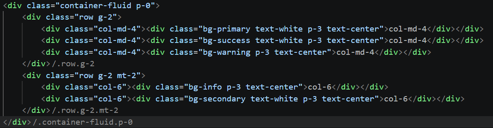

Bootstrap5 Grid System brings responsiveness to the websites and has total of six breakpoints i.e xs, sm, md, lg, xl, xxl. The responsive class provides redefined classes for building complex responsive, dynamic and flexible layout on the website.
Code

Live Output
col-md-4
col-md-4
col-md-4
col-8
col-4
The pattern:
.container → .row → .col-*. Columns always add up to 12. At breakpoints smaller than specified, they stack to full width.